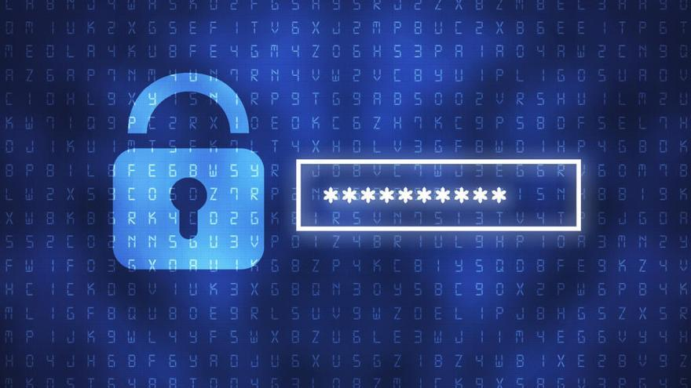
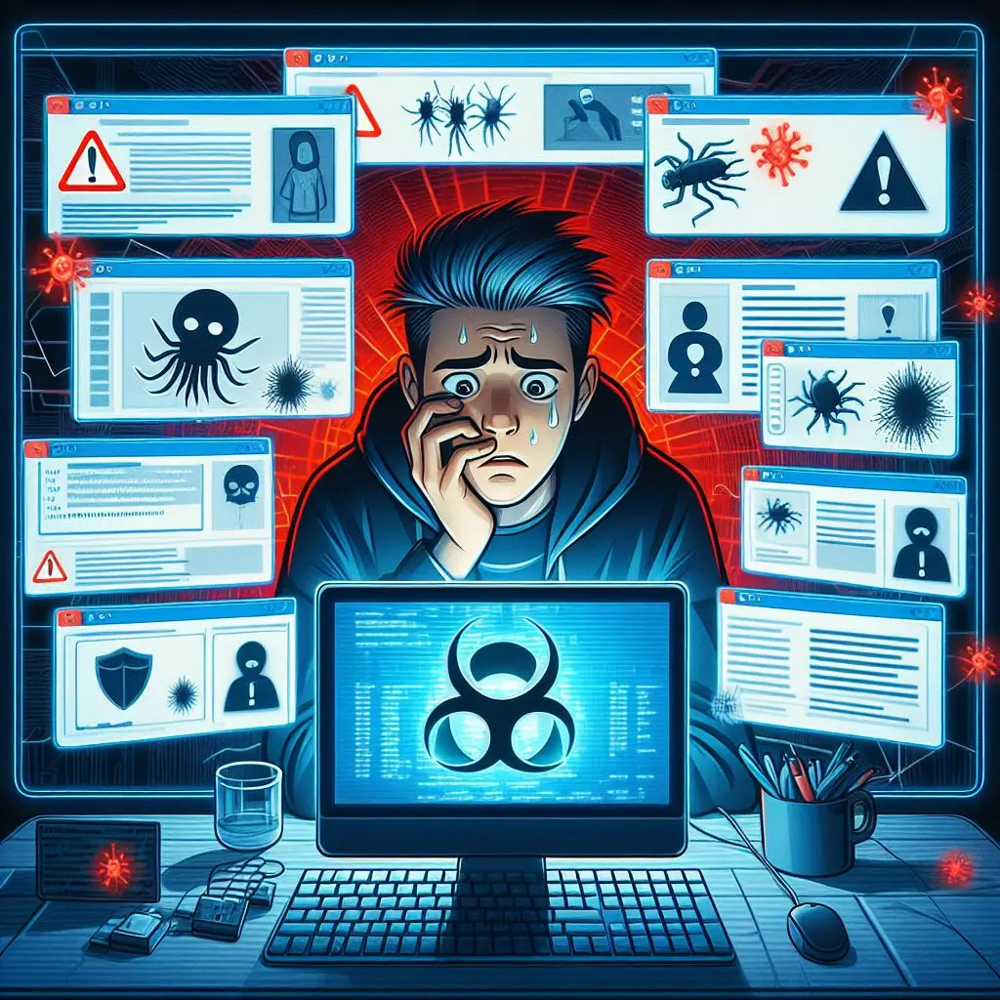

Nuestra misión es proporcionarte los conocimientos, herramientas y recursos necesarios para fortalecer tu seguridad digital. Ya seas un usuario cotidiano navegando por la web o un empresario protegiendo los activos digitales de tu empresa, estamos aquí para ayudarte a navegar por el complejo panorama de la seguridad en línea.
Desde consejos prácticos sobre contraseñas seguras y detección de phishing hasta análisis profundos de las últimas tendencias en ciberseguridad, nuestro equipo de expertos está comprometido en brindarte información actualizada y relevante para proteger tu presencia en línea.
Explora nuestro sitio para descubrir artículos informativos, guías paso a paso, reseñas de herramientas de seguridad y mucho más.
¿Que es seguridad?
La autenticación de dos factores (2FA) es un proceso de seguridad que requiere dos formas distintas de confirmar la identidad de un usuario. Por lo general, implica algo que el usuario sabe, como una contraseña, y algo que el usuario tiene, como un código único generado en un dispositivo móvil o una llave de seguridad física. Al implementar la 2FA, incluso si un tercero obtiene acceso a la contraseña, aún necesitarían el segundo factor para ingresar a la cuenta, lo que añade una capa adicional de protección. Esta medida reduce significativamente el riesgo de acceso no autorizado, fortaleciendo así la seguridad de las cuentas en línea.
Consejos Generales de Seguridad
Utiliza autenticación de dos factores (2FA): Habilita la autenticación de dos factores siempre que sea posible. Esto añade una capa adicional de seguridad al requerir una segunda forma de verificación, como un código enviado a tu teléfono móvil, además de tu contraseña.
Ten cuidado con los correos electrónicos sospechosos: No hagas clic en enlaces ni descargues archivos adjuntos de correos electrónicos no solicitados o de remitentes desconocidos. Los correos electrónicos de phishing son una táctica común utilizada por los delincuentes cibernéticos para engañarte y obtener información confidencial.
Mantén tus contraseñas seguras y únicas: Crear y proteger contraseñas sólidas es crucial para la seguridad en línea. Combina letras, números y caracteres especiales para aumentar la complejidad. Evita información personal fácilmente accesible o secuencias obvias. Utiliza frases significativas y cambia algunas letras por números o caracteres especiales. Mantén contraseñas únicas para cada cuenta y actualízalas regularmente. Considera el uso de un administrador de contraseñas para gestionarlas de forma segura. No compartas tus contraseñas con nadie y evita almacenarlas en lugares no seguros. Recuerda que una contraseña segura es tu primera línea de defensa contra ciberataques.
Mantén tu software actualizado: Instala regularmente las actualizaciones de software y parches de seguridad en todos tus dispositivos y aplicaciones. Esto ayuda a protegerte contra vulnerabilidades conocidas que podrían ser explotadas por ciberatacantes.
Cuida tu información personal en las redes sociales: Sé selectivo al compartir información personal en las redes sociales y revisa la configuración de privacidad para controlar quién puede ver tu contenido. La información que compartes en línea podría ser utilizada por los ciberdelincuentes para realizar ataques de ingeniería social.
Protege tus dispositivos: Utiliza software antivirus/antimalware en tus dispositivos y activa los cortafuegos para ayudar a detectar y bloquear amenazas. Además, considera el cifrado de datos para proteger la información sensible almacenada en tus dispositivos.
Protección de Contraseñas

Los ciberdelincuentes pueden utilizar la información que compartes en las redes sociales para crear ataques de ingeniería social más convincentes, engañándote para que reveles información confidencial o hagas clic en enlaces maliciosos.
Utiliza frases significativas y cambia algunas letras por números o caracteres especiales. Mantén contraseñas únicas para cada cuenta y actualízalas regularmente. Considera el uso de un administrador de contraseñas para gestionarlas de forma segura. No compartas tus contraseñas con nadie y evita almacenarlas en lugares no seguros. Recuerda que una contraseña segura es tu primera línea de defensa contra ciberataques.
Seguridad en Redes Sociales
Ajusta la configuración de privacidad para controlar quién puede ver tu información y publicaciones.Asegúrate de tener contraseñas seguras y únicas para cada red social.No aceptes solicitudes de amistad o conexión de personas que no conoces. Evita compartir información personal sensible, como tu dirección, número de teléfono, o detalles financieros. Cuando uses aplicaciones de terceros que se conectan a tus redes sociales, revisa los permisos que solicitan y asegúrate de que sean necesarios y adecuados.
Protección contra el Malware

Usar herramientas antivirus para protegerse contra el malware común y conocido. Seguir las prácticas recomendadas de parcheado de aplicaciones y sistema operativo (SO).Eliminar los derechos de administrador local de las cuentas de usuario estándar para reducir la superficie de ataque.Aplicar listas grises de aplicaciones en los endpoints de los usuarios para evitar que las aplicaciones desconocidas.Aplicar listas blancas de aplicaciones en los servidores para maximizar la seguridad de estos activos.Hacer copias de seguridad periódicas y automáticas de los datos de endpoints y servidores para permitir una recuperación eficaz en caso de desastre.
!Cuidado con las redes!
Amenazas de ingeniería social: Los ciberdelincuentes pueden utilizar la información que compartes en las redes sociales para crear ataques de ingeniería social más convincentes, engañándote para que reveles información confidencial o hagas clic en enlaces maliciosos.
Suplantación de identidad (phishing):Los hackers pueden crear perfiles falsos para hacerse pasar por personas conocidas y luego usar esos perfiles para engañar a otros usuarios y obtener acceso a sus datos personales o credenciales de inicio de sesión.
Exposición de información sensible: La publicación de información personal, como ubicaciones, fechas de nacimiento o detalles sobre la vida cotidiana, puede exponerte a riesgos como el robo de identidad, el acoso en línea o la suplantación de identidad.
Riesgos para la reputación personal y profesional:Los comentarios o publicaciones imprudentes en las redes sociales pueden tener un impacto negativo en tu reputación personal o profesional, lo que podría afectar tu carrera o relaciones personales.
Uso indebido de la información por parte de terceros:Las plataformas de redes sociales recopilan y utilizan datos personales para diversos fines, lo que puede plantear preocupaciones sobre la privacidad y la seguridad de los datos, especialmente si esa información se comparte o vende a terceros sin tu consentimiento.

.jpg)